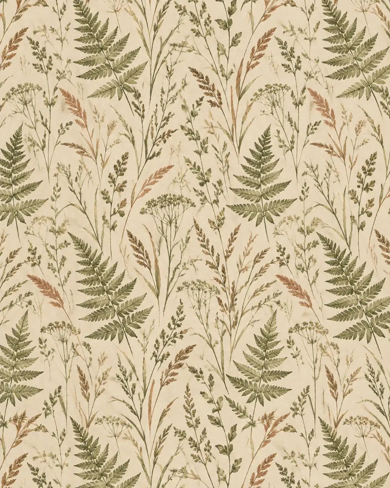
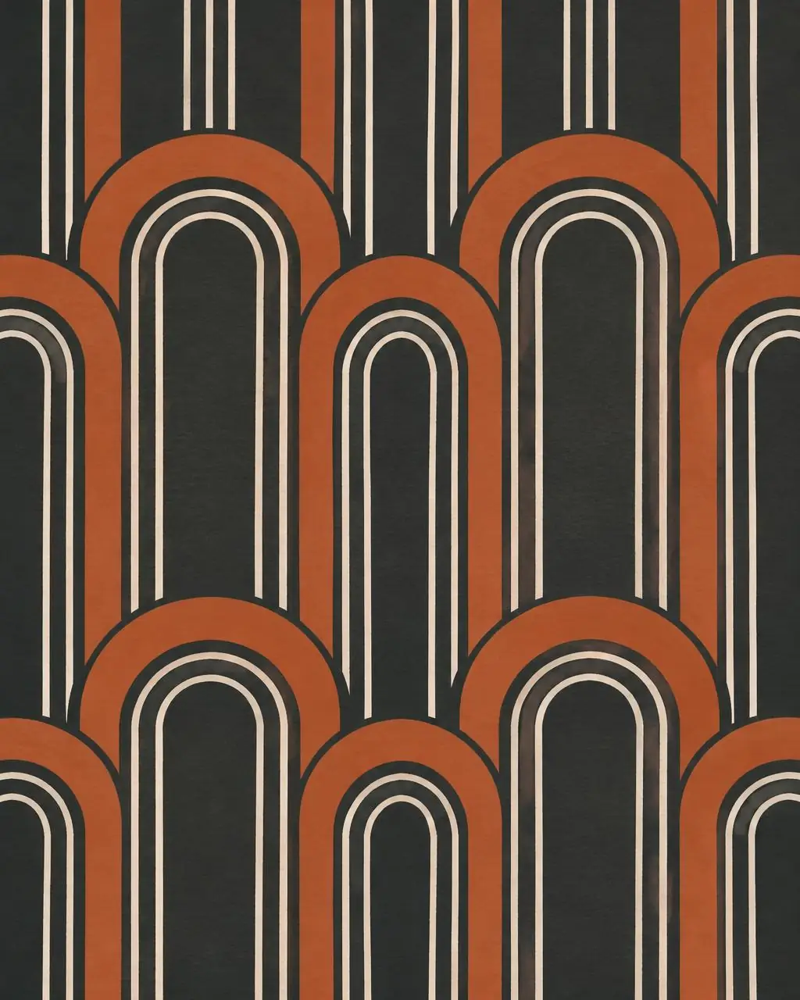
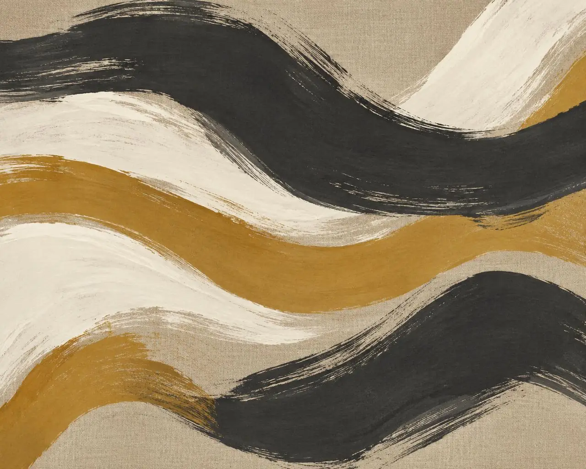

01 · Change anything
Don’t love one detail? Ask the artist who drew it to change it for you.
Need changes? Ask the designerDesign: Cranes at Dusk by Yuki Arai
Are you a designer? Create for us. Get paid for your art.
Discover the opportunityOriginal art. Made to measure.
Find your design. See it in your room. Made to fit your wall.
01 · Change anything
Design: Cranes at Dusk by Yuki Arai
02 · Mural or repeat
Design: Fernhouse by Maren Holt

03 · Made to measure
Design: Long Mist by Tomás Reyes
04 · See it first
Design: Deco Arches by Inès Okafor

05 · Made just for you
Design: Tide Marks by Inès Okafor

The considered collection

Yuki Arai · Mural

Maren Holt · Repeat

Inès Okafor · Repeat

Tomás Reyes · Mural
Original artwork. Each design is sized to your wall.
Before you make it yours
Find the wallpaper that feels right at home. Preview your favorite design in your own room before you order.
See it in my room
 BeforeAfter
BeforeAfterFollow your feeling
The artist behind the wall
Ink, gold leaf, and a lot of empty space.
Discover the artist behind Cranes at Dusk. Explore the collection, find your favorite color, or start a conversation about your own wall.
Meet the artist
Artwork detail / room inspiration
From inspiration to installation
Find an original mural or pattern that feels like you.
Preview the design in your room and enter your wall measurements.
We print to order and ship your wallpaper, ready for its new home.
A personal touch
A new color, an unusual wall, a design all your own.